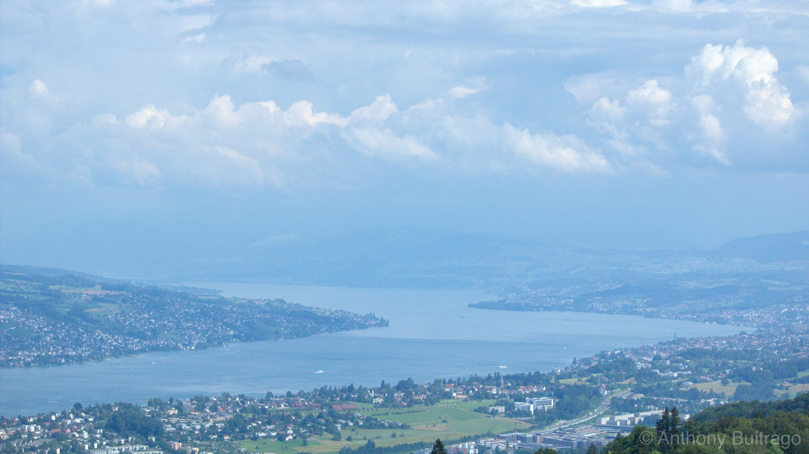
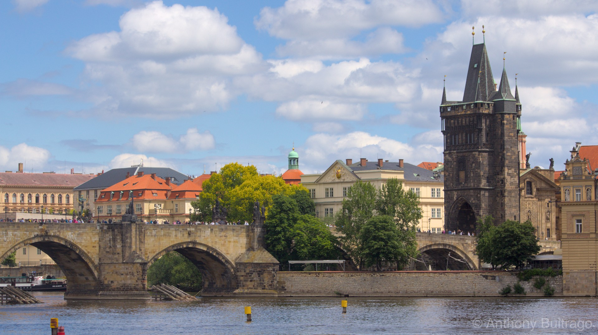
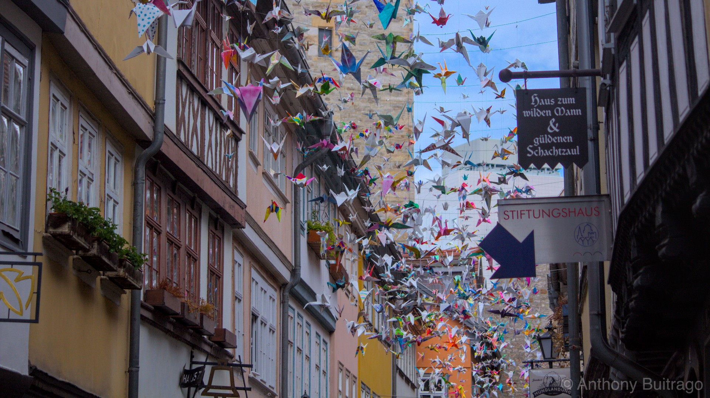

Our cats, our family: Token and Cash
In our home, we are four members: my partner, me, and our two adorable cats, Token and Cash. For us, they are not just pets; they are a fundamental part of our lives, loyal companions who have taught us so much about love, responsibility, and happiness in small moments. If you've ever had the pleasure of sharing your life with a cat, you'll know exactly what we're talking about.
Token: The queen of the house
Token came into our lives when she was just three months old, a bundle of energy and vitality. She is a beautiful tricolor cat, with shades of yellow, white, and black, and a personality as vibrant as her colors. From the first day, her playful and active nature became evident. She loves to jump high every time we play with her, especially with her favorite toy: a string she never seems to tire of chasing.
There is something very special about watching her jump gracefully through the air, as if she's defying gravity with each leap. But if there's one thing that really drives her crazy, it's insects. The moment a little intruder sneaks into the house, Token is on it, fully focused and ready to hunt.
Despite her energy, she also has a sweet side. She likes to stay close to us, whether it's curled up at the foot of the bed, on the pillow next to our heads, or on our laps. Although she loves petting, it has to be in moderation; she's independent and always sets the boundaries. Sometimes a light touch is enough for her, while other times she prefers to be left alone in her own way.
Cash: The affectionate spoiled one
Cash is our second cat, a beautiful black feline that we adopted when he was just two months old. He was the smallest of his litter, and his fragility won us over from the very beginning. Token, on the other hand, took a bit of time to accept him, but once she did, her maternal instincts kicked in. By then, Token was six months old, and although she was also young, she took on the role of big sister in a heartwarming way.
Watching Token take care of Cash was incredible. She would protect him, play with him, and groom him as if he were her own child. Since then, Cash became the family's darling. Unlike Token, who can be cautious with strangers, Cash is fearless; he jumps into anyone's arms looking for pets. He is the most sociable and affectionate cat we've ever met.
However, our dear Cash has had some health issues. Over time, he has gained significant weight, something the vet attributes to his neutering. This has led us to monitor his diet and ensure that both Cash and Token get enough exercise by playing. But Cash remains our pampered baby, the one who sleeps between our legs or nestled in our arms, like a little kitten seeking protection and affection.
Lessons in love and responsibility
Our cats have changed our lives in ways we never imagined. They've made us more responsible, more attentive, and more loving. They've taught us to be more present, to care for and look after another living being. Each day with them is a reminder of how fortunate we are to have their company.
In tough moments, their presence has been an unmatched source of comfort. There's something magical in how a simple purr or the warmth of a cat sleeping next to you can dispel the worries of the day. And in good times, their energy and joy fill us with happiness. Watching them play, run around the house, or curl up with each other is a sight that never tires us.
A home filled with feline love
One of the things we love most is seeing the relationship between Token and Cash. Although their personalities are very different, they've developed an unbreakable bond. They accompany each other, play together, and, though there's occasionally a spat (like in any family), they love each other deeply. They are never alone because they have each other, and we have the privilege of being part of this little feline community.
Token and Cash have not only made our house a warmer and more welcoming place, but they've also taught us that family doesn't always mean humans. For us, our cats are like our children, and we love them with all our hearts. Every day with them is a new adventure, full of love, play, and, above all, gratitude for the opportunity to share our lives with two such special beings.
In short, we are a small family of four, and we couldn't imagine our lives without Token and Cash.
The creation of this blog: My space for passion and development
In today's world, having an online presence is not only a powerful tool for sharing knowledge, experiences, or anything else, but it is also an excellent way to put technical skills into practice and showcase them. With this dual purpose in mind, I decided to embark on creating my own blog. This project represents not only a personal space to express my thoughts and share my adventures, but also a platform to solidify and display my skills in HTML, CSS, and JavaScript.
Motivation behind the creation
The decision to create a blog arose from the need to find a balance between my passion for programming and my love for photography, especially nature photography. I wanted a place where I could combine these interests in a coherent and attractive way. Additionally, I realized that developing a blog offered me an invaluable opportunity to deepen my understanding of markup and styling languages, as well as programming with JavaScript.
Sharing my photographs and travel adventures
One of the pillars of my blog will be photography; I have always found it a way to capture special moments, breathtaking landscapes, and unforgettable memories. This blog provides the perfect platform for me to share these images, accompanied by detailed stories of each experience. Each travel article will not only feature high-quality photos but also include personal reflections, useful tips, and lessons learned along the way. This approach will not only enrich the content but also create a deeper connection with you, my readers, allowing you to experience my adventures through my words and images.
Continuous improvement plans
I recognize that the world of web development is constantly evolving, and that's why I plan to improve my blog progressively, learning more along the way. Among the main enhancements I plan to apply are SEO optimization, increasing the blog's visibility, advanced features like comments, email subscriptions, and an interactive image gallery. I will also use git to maintain optimal version control, and I'll probably upload it to a public repository on the web, like GitHub, ensuring stable updates and backups.
I'm excited about the future of this project and the countless possibilities that arise as I continue learning and evolving in the field of web development. I invite everyone to join this journey with me, exploring new horizons in both technology and the world around us.
Between history and nature: A Photographic journey through Switzerland, the Czech Republic, and Germany
Zurich: The gateway to adventure
In June 2024, I had the opportunity to take a trip that left an indelible mark on my memory. My adventure began in Zurich, Switzerland, a city where modernity and nature coexist in perfect harmony. I spent five days exploring Zurich, which was enough time to enjoy some of its most iconic places. One of the sites that impressed me the most was Park Seleger Moor, a natural park that seems like a living painting, where flowers and vegetation unfold in an explosion of colors and aromas. Rhododendrons and azaleas spread everywhere, creating an enchanting atmosphere that made me feel as if I were inside a secret garden.
Another unforgettable moment was the visit to Üetliberg, known as Zurich's "home mountain." From its summit, you get breathtaking panoramic views of the city and the majestic Swiss Alps, which seem to embrace the horizon with serenity. The trail to the summit is surrounded by lush vegetation, and the fresh breeze accompanied me throughout the hike, making the effort worthwhile. As part of the journey, we also headed north to visit the imposing Rheinfall, one of the largest waterfalls in Europe. The force of the water, the deafening roar, and the mist in the air evoked a profound sense of smallness in the face of the immensity of nature. Watching the water plunge endlessly was a touching reminder of the uncontrolled power of nature.
The Czech Republic: Liberec and Prague, contrasts and charm
After those days in Switzerland, I headed to the Czech Republic, where I explored two fascinating cities: Liberec and Prague. In Liberec, I spent a few days touring the region, enjoying its distinctive architecture and the tranquil atmosphere, a clear contrast to the hustle and bustle of the capital. During my stay, I visited Ještěd Tower, an architectural marvel that looks like a spaceship perched on top of a mountain. From the tower, you can appreciate the entire region, with green hills extending as far as the eye can see, while the cold wind wraps around you, deeply connecting you to the natural surroundings.
I also visited the Liberec Zoo, the oldest in the Czech Republic, where I had the chance to see rare species like the snow leopard. The layout of the zoo, integrated into a wooded environment, makes you feel immersed in a small ecosystem full of life. Additionally, I admired the Town Hall of Liberec, a building with a spectacular Neo-Renaissance design that stands out for its elegance and detailed ornamentation; its decorated facades and the imposing central tower are a testament to the architectural grandeur of the past.
Later, I arrived in Prague, a city that seems straight out of a fairy tale. Its cobbled streets, historic buildings with Baroque and Gothic facades, and the Vltava River running through it create a truly magical setting. One of the most memorable moments was the visit to Prague Castle, an imposing fortress overlooking the city from above, surrounded by well-kept gardens and charming little alleys. Walking through its courtyards and observing the details of the majestic St. Vitus Cathedral made me feel as if I were stepping back in time.
I also walked across the famous Charles Bridge, filled with history and statues, where every corner seems to tell a different legend. As I crossed the bridge, I could hear street musicians and see artists capturing the vibrant essence of the city. The center of Prague is equally charming, with its lively squares where tourists and locals mingle, enjoying Czech culture and cuisine. The Old Town Square, with its iconic Astronomical Clock, is the heart of the city, where every hour people gather to watch the procession of mechanical figures, a spectacle that seems to have stopped time.
An unforgettable memory was visiting a candy shop with a mining theme; the attention to detail in the decoration and the variety of sweets made the experience unique. Prague is full of candy shops! Each one has its own charm, especially those with pirate themes; there were so many pirate-themed stores! Each shop seemed to offer a different experience, and the creative atmosphere made each stop feel like a little adventure.
Thuringia, Germany: History and serenity
After five days in the Czech Republic, my next destination was Thuringia, in Germany. I have had the opportunity to visit Germany several times, and each time I find something new and fascinating. Although I only stayed there for three days, it was enough to absorb the history and serenity that characterize this region. The rural landscapes, the intense greenery of the fields, and the feeling that time flows more slowly were perfect for disconnecting and enjoying nature. Thuringia has a bucolic air; golden fields sway in the wind, and small villages seem frozen in time under the sun.
I also visited the capital of the region, Erfurt, a city full of churches and fascinating architecture that captures the best of German style. I toured the historic center, with its cobblestone streets and half-timbered facades, and was impressed by the majesty of St. Mary's Cathedral. This Gothic cathedral, with over 1,200 years of history, stands on a hill, and upon entering, the height of its vaults and the intricate stained glass windows filtering light in magical hues overwhelmed me. Erfurt is also known for the Krämerbrücke, a beautiful bridge covered with medieval houses that host artisan shops and galleries, giving it an almost storybook atmosphere.
Finally, I returned to Zurich to spend six more days before heading back to Colombia.
Back to Zurich: Reflections and photography
That time in Zurich was dedicated to reflection, spending time with friends, and editing the photographs of the places I had visited and the unforgettable moments I experienced. Each of those images carried the story of a special moment, from the Swiss mountains to the bustling squares of Prague. The trip was a perfect combination of history, nature, and culture, and each photograph tells its own story.
This journey allowed me not only to discover new places but also to reflect on the diversity of landscapes and experiences that Europe has to offer. From the serene greenery of the Swiss Alps to the vibrant energy of Prague and the historical serenity of Thuringia, each destination left an indelible mark on me. Switzerland, the Czech Republic, and Germany are destinations I would unreservedly recommend to any traveler passionate about culture, history, and natural beauty.